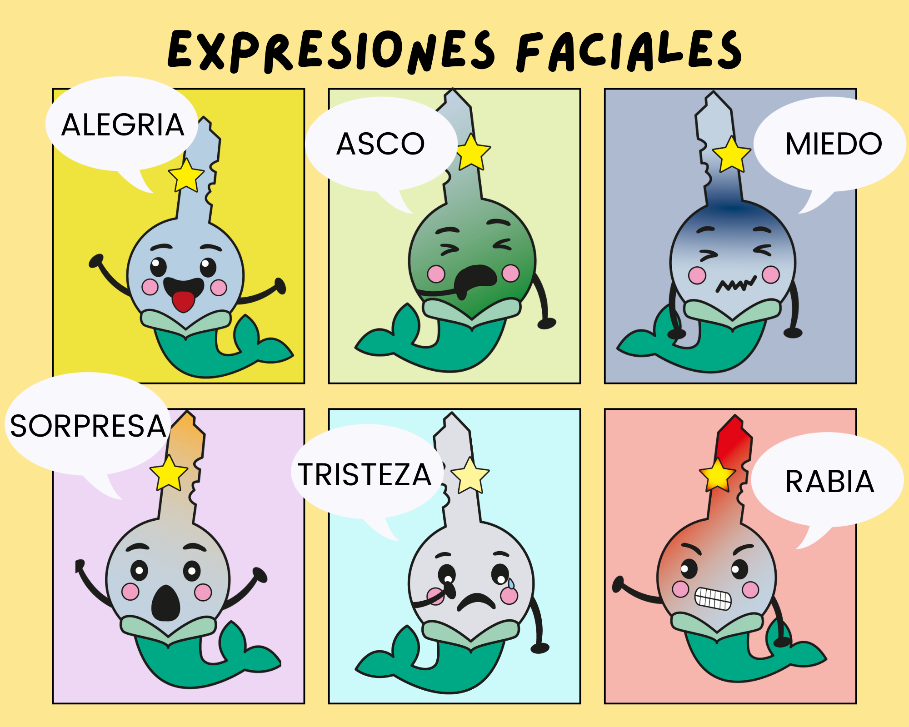

1. Las emociones
¿Quieres conocer a Clavisirena? Lee el siguiente minicuento. Haz clic aquí para descargar e imprimir el relato.
Audio
Fíjate en los siguientes fragmentos.


¿Por qué lloraba la pequeña Clavisirena?
¿Qué le hizo estar de nuevo alegre?
Tristeza, alegría, ira, miedo, sorpresa o asco son reacciones naturales que tenemos las personas. Estas reacciones se llaman emociones.
En los cuentos y narraciones, las emociones se pueden mostrar de forma muy sencilla.
Lectura facilitada
¿Por qué lloraba la pequeña Clavisirena?
Después estaba alegre.
¿Por qué?
Las emociones son sentimientos naturales de las personas.
Los tipos son: tristeza, alegría, miedo, sorpresa o asco.
Los cuentos muestran emociones.
Audio
El narrador del cuento nos dice directamente cómo se siente el personaje.

El personaje piensa cómo se siente, en este caso lo cuenta en primera persona o se lo dice a otro personaje del cuento.
Los gestos de la cara nos ayudan a expresar distintas emociones.

A través de lo que hace el personaje, sus acciones y reacciones nos ayudan a reconocer cómo se siente.